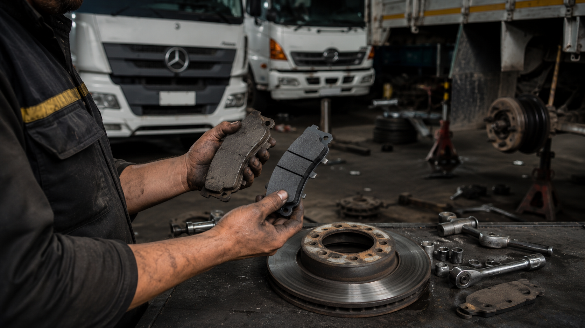

Las pastillas de freno son la pieza que más rápido se desgasta en todo el sistema de frenado. Cambiarlas a tiempo no solo evita gastos mayores, también es una decisión de seguridad para ti y para las personas que van contigo en el vehículo.
1. Ruido metálico al frenar
La mayoría de pastillas tienen un indicador de desgaste, una pequeña pieza metálica que roza el disco cuando el material de fricción está por agotarse. Ese chillido agudo al pisar el freno es la primera señal de alerta.
2. Vibración en el pedal o el volante
Si sientes que el pedal o el volante vibran al frenar, puede indicar que las pastillas están desgastadas de forma despareja o que ya dañaron la superficie del disco.
3. El vehículo tarda más en detenerse
Una distancia de frenado más larga de lo normal es una señal directa de que el material de fricción ya no muerde el disco como debería.
4. Luz de aviso en el tablero
Muchos vehículos modernos tienen un sensor de desgaste que enciende una luz en el tablero. No la ignores: ese aviso suele aparecer cuando queda muy poco margen antes de dañar el disco.
5. Espesor visual menor a 3 mm
Si puedes ver la pastilla a través de las rendijas del rin, y su espesor es menor a 3 milímetros, es momento de cambiarla. Por debajo de ese punto, el riesgo de dañar el disco aumenta considerablemente.
¿Qué pasa si no las cambio a tiempo?
Cuando el material de fricción se agota por completo, el metal de la pastilla queda en contacto directo con el disco. Esto raya y desgasta el disco de forma irreversible, obligando a un rectificado o un cambio completo, una reparación mucho más costosa que el cambio de pastillas.
Revisamos tus pastillas gratis
Agenda un diagnóstico sin costo y te decimos exactamente cuánto material de fricción te queda.